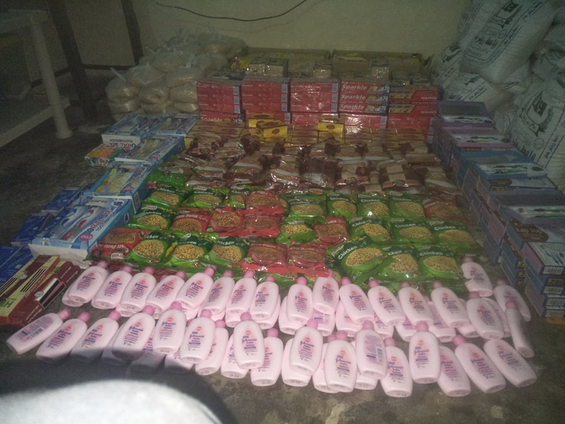

Our goal is to promote peace by providing educational opportunities, basic necessities, and better
living conditions to Clarkabad, Pakistan
and Kuk, Cameroon through your financial generosity.
The primary goal of Vision For Peace is to foster children's education in Clarkabad, Pakistan and Kuk, Cameroon by providing students with full scholarships

BASIC NECESSITIES
Vision For Peace also provides medical care and basic necessities such as food and toiletries to students and their families
MEET SOME OF the STUDENTS you are helping
Roheen Kashif
"I will always remember how you helped me to get this
wonderful opportunity to get education, which was really difficult financially for
my family. I want to fulfil my mom's
dream to become a doctor. I'm really studying hard to make it possible, so I
can help my family. I can only hope that
someday I'll be in a position to repay you.
Thank you Vision For Peace for all your love and support!"
Eve Rashid
"Hi! I'm Eve Rashid. I study in St. Monica's High school. It’s
privilege for me to say thank you for making a difference in our lives. I will
be always thankful to VFP for their support and love. Vision for Peace started
helping me when I was in kindergarten. And in future I want to be a Nurse, and I
really want to help someone in their studies in any capacity the same way
Vision For Peace helped me."
Mishal Nadeem
"I'm grateful for Vision for Peace. They started helping my
family in such time when even to think about going to school or sending us
school for our parents was really very difficult. Now my family is really
excited! I got admission when I was in Kindergarten. Vision For Peace is taking
care of my studies since then and now I'm in grade 9. I want to become Doctor
so I can be a helping hand for the children who can't afford their studies."
Milka Ijaaz
"I have passed my exam of grade 10 and scored 917 out of
1150.
Vision For Peace started supporting me years ago for my studies. My
family is so grateful for their love and support. Thank you Vision For Peace
for supporting me. It really helps me to make my dreams. Thank you for
continuously helping me for my college.
Thank you."
Congratulations Milka!!
Sunera Mushtaq
"I
have passed my exam of grade 10 and scored 910 out of 1150.
Vision For Peace started supporting me when I was in grade
7. My family was unable to support me for my studies because of our financial
condition. I'm grateful to Vision For Peace for supporting me. It really helps
me to pursue my dreams. Now I will take admission in FSc. FSc is an
abbreviation for the Faculty of Science. This is a science-based study program
for intermediate students. Thank you for continuously helping me for my
college.
Thank you."